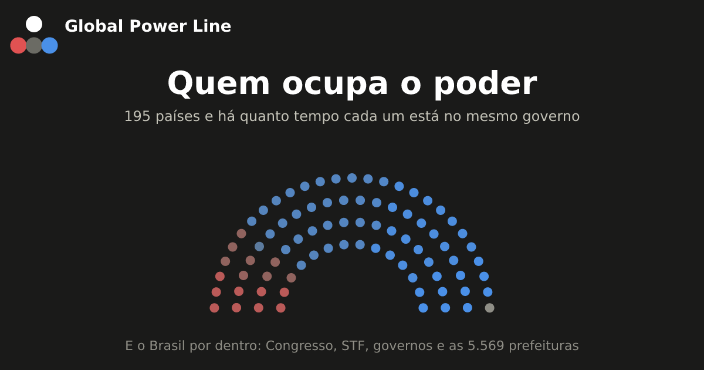
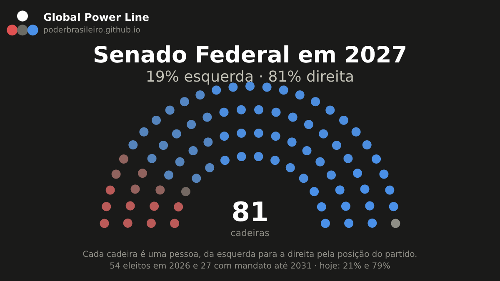
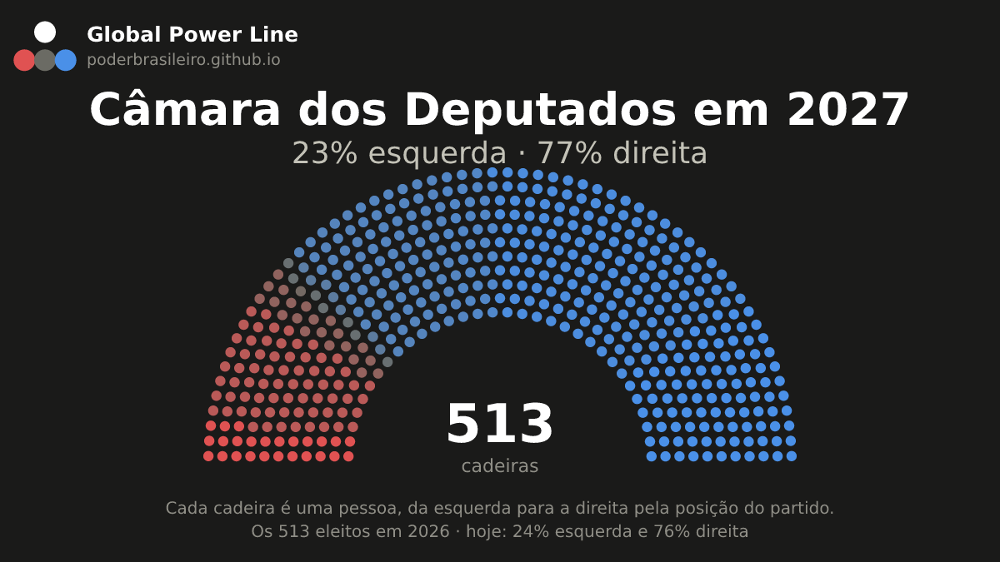

Pauta de 26/10/2026
Clique em Copiar texto e cole no X, ou use Abrir no X que já vai preenchido. A imagem aparece sozinha na prévia do link — não precisa baixar nem anexar.
1. Resultado do 2º turno
2º turno — Presidência da República: eleito(a) Lula (PT), com 51,79% dos votos válidos. Vice: Geraldo Alckmin. Quem fica e quem sai em 2027: https://poderbrasileiro.github.io/#rede #Eleições2026 #SegundoTurno
2. Resultado do 2º turno
2º turno — Governo de AC: eleito(a) Mailza Assis (PP), com 66,21% dos votos válidos. Vice: Jessica Sales. Quem fica e quem sai em 2027: https://poderbrasileiro.github.io/#rede #Eleições2026 #SegundoTurno #Acre
3. Resultado do 2º turno
2º turno — Governo de AM: eleito(a) Omar Aziz (PSD), com 61,42% dos votos válidos. Vice: Alessandra Campelo. Quem fica e quem sai em 2027: https://poderbrasileiro.github.io/#rede #Eleições2026 #SegundoTurno #Amazonas
4. Resultado do 2º turno
2º turno — Governo de DF: eleito(a) Celina Leão (PP), com 57,18% dos votos válidos. Vice: Gustavo Rocha. Quem fica e quem sai em 2027: https://poderbrasileiro.github.io/#rede #Eleições2026 #SegundoTurno #DistritoFederal
5. Estreia — fixe este no perfil
Quem governa cada um dos 195 países do mundo, e há quanto tempo. E o Brasil por dentro: Congresso, STF, governos estaduais e as 5.569 prefeituras. Dados públicos, atualizados todo dia. Sem vínculo com governo ou partido. https://poderbrasileiro.github.io/c/poderbr.html #Brasil #Congresso
A imagem entra sozinha pela prévia do link. Não precisa anexar nada.

6. Estreia
Senado Federal em 2027: 81% de direita e 19% de esquerda a partir de fevereiro de 2027. Mais à direita que hoje, que está em 79%. São 54 eleitos em 2026 mais 27 com mandato até 2031. Cadeira por cadeira: https://poderbrasileiro.github.io/c/2027-senador.html #Senado #Eleições2026
A imagem entra sozinha pela prévia do link. Não precisa anexar nada.

7. Estreia
Câmara dos Deputados em 2027: 77% de direita e 23% de esquerda a partir de fevereiro de 2027. Mais à direita que hoje, que está em 76%. Os 513 trocam de uma vez. Cadeira por cadeira: https://poderbrasileiro.github.io/c/2027-deputado.html #Câmara #Eleições2026
A imagem entra sozinha pela prévia do link. Não precisa anexar nada.

Refeita sozinha todo dia. O que já apareceu aqui não volta em pautas futuras.